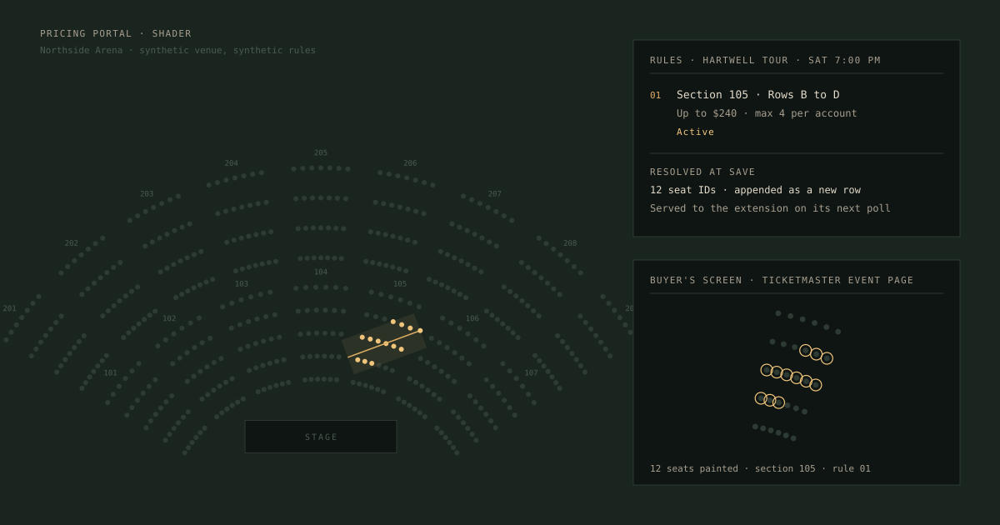
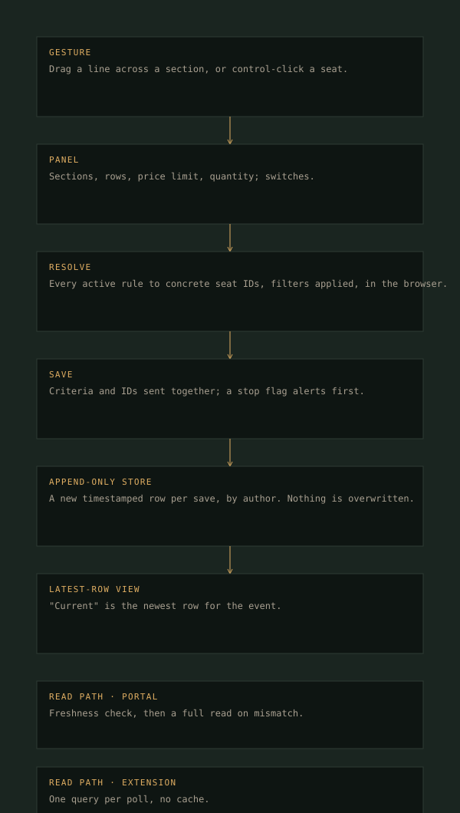
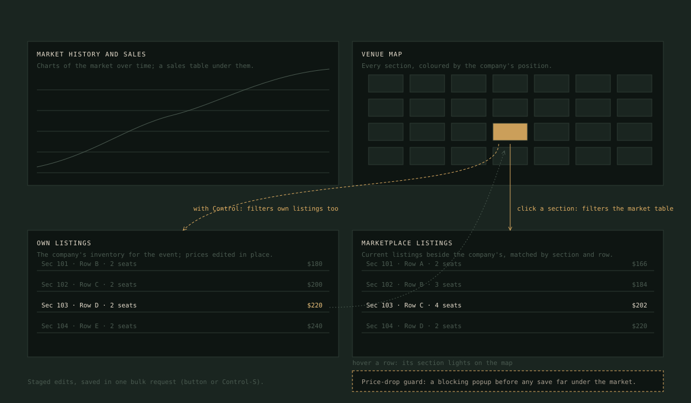
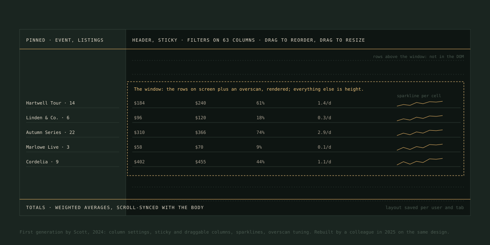

Pricing portal
The internal web app where a ticket brokerage prices its inventory against current marketplace listings and plans its buying. A team system; these are the parts I built inside it over three years.
- Role
- Full-stack engineer, one of about eight contributors
- Stack
- React · Redux · Node · Express · BigQuery · MySQL · Redis · Sentry
- Where
- Etainement, one of the larger US brokers · proprietary
- Code
- Walkthrough on request

The Shader: a rule drawn across a section, resolved to seat IDs at save, and painted by the extension. Synthetic venue, synthetic rules.
The problem
Two jobs under one roof: pricing what is held, and planning what to buy.
Placeholder. Analysts work through events where the company holds tickets, see their own listings beside the current market, and change prices by hand or by rule. On-sale managers plan what to buy and draw, on a venue map, the seats the business wants. That drawing is what the buyer extension paints.
Placeholder. The portal has no data of its own. Everything comes from, and is written to, a backend that reads three point-of-sale systems live, keeps its record in a warehouse, and caches what it can.
Placeholder. Eight people built it over two years. What follows is the part of it that is mine.
What was built
My parts, named.
Placeholder. Second of about eight contributors by commits, with the clearest ownership in the rule-authoring panel the extension consumes, the first generation of the analysts' worklist, and the platform work on the backend.
- Shader
- The rule-authoring panel: gestures on the map, typed entry, the switches, resolution to seat IDs at save
- Stale sheet
- The first generation of the analysts' virtualised worklist
- Pricer
- The original page; cross-panel filters; the price-drop guard
- App
- The original Settings page, route guarding, the pricing dashboard, Sentry
- Backend
- The manual price-update path and its audit trail; the rules service and stop alerts; the service-account split with per-query page tagging; the telemetry write buffer
Rules
From a gesture to a list of seat IDs.
Placeholder. A manager needs to say "these sections, these rows, up to this price" in seconds, during an on-sale. Control-click picks a seat and starts a rule for its section. Control-drag draws a line, not a box: the seats within a band around it are collected by a point-in-polygon test. Every rule can also be typed.
Placeholder. On submit the browser walks every seat in the venue and resolves each active rule to concrete IDs, applying the three filters. The saved record carries both the readable criteria and the resolved list, which is why the extension never has to filter.

The Pricer
Four panels that filter each other.
Placeholder. One event in four resizable panels. Clicking a section on the map filters the market table; with Control it filters own listings too; hovering a row lights its section. Section and row filters accept single values, lists, and ranges, with a fallback when names differ between sources.
Placeholder. Edits are staged, not sent, and saved in one bulk request. A price far enough under the market's lowest comparable opens a blocking popup first, where the price can be corrected before confirming. It is the one action here that costs money immediately if it is wrong.


The backend
A warehouse asked to behave like a database.
The manual price update and its audit trail
Placeholder. The backend looks up which point of sale owns the event and pushes the change. Only if the whole push succeeds does it append an audit row per listing: who, when, old price, new price. The partial-failure branch is the honest part of the drawing.
The rules service and the stop alert
Placeholder. A save sanitises the record, posts an alert if the stop flag is set, appends a row, writes per-seat notifications, and warms the cache. The portal reads through a freshness check; the extension reads the latest-row view directly.
Cost attribution by service account and page
Placeholder. Four warehouse clients, one per product area, and a metadata comment on every query naming the tool and page, so warehouse cost can be read per page from the job log. The most transferable technique in the repo.
The telemetry write buffer
Placeholder. Login telemetry batched into the warehouse every ten seconds or a hundred records, with retry and a flush on shutdown, so a stream of single-row writes never reaches a store built for the opposite.
What I would do differently
Enforce on the server what the browser only suggests.
Placeholder. The role model is real and well normalised and is enforced only in the browser. The price guard, likewise. Two managers editing one event overwrite each other, last write wins. And five table libraries where one would do.
Placeholder. What stood in for tests was a staging environment and, from 2025, Sentry with replay and source maps, which I wired. The first thing it found is a story for an interview.